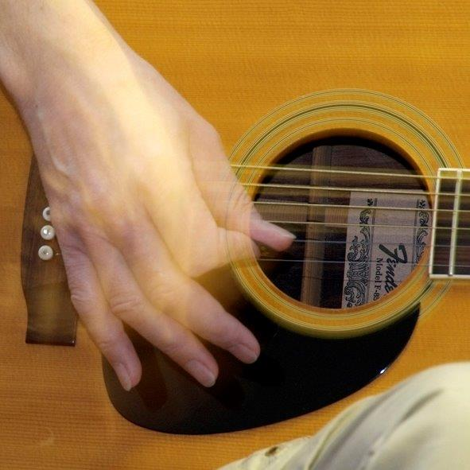

Binnenweide 13
27449 Kutenholz
Telefon: 04762 2386
Mobil: 0170 58 59 451
Musikmachen trainiert das Gehirn, hat sich bei Untersuchungen gezeigt.
Die US-Psychologin Francis Rauscher sagt dazu: „Frühe Musikerziehung […] fördert eine Art von Intelligenz, die für besonders wissenschaftliches und mathematisches Denken notwendig ist.“
Durch aktive Musikausübung werden grundsätzliche menschliche Bedürfnisse wie Zufriedenheit, Entspannung, Freude, psychishe und physische Harmonie in uns und beim Austausch mit anderen gefördert.